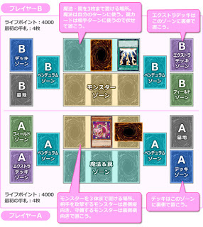

Novo formato de Duelo Rápido criado pela Konami (OCG)
Essa nova modalidade (infelizmente ainda não em cima de motos) provavelmente foi criada tendo como base os Duel Terminals devido a presença de apenas três zonas de Monstros e Spells/Traps. Como o nome sugere, tem por finalidade duelos mais acelerados.
Ainda sem utilização oficial, esta parece ser apenas uma forma casual de se jogar sugerida pela empresa em seu site oficial japonês.
As regras:
- Seu deck deve conter exatamente 20 cartas.
- Seu extra deck deve conter de 0 a 5 cartas.
- Cada jogador começa com 4000 pontos de vida e 4 cartas na mão.
- Até 3 cópias de cada carta no deck (não está claro se ignora a banlist, é provável que não.)
- As fases seguem normalmente (Draw, Stand by, Main 1, Battle, Main 2, End)
- O campo possui apenas três zonas de monstros e três zonas de mágicas/armadilhas, conforme figura abaixo.

O formato aparenta ser focado principalmente em OTKs, devido a consistência que a redução de cartas dá a decks baseados nesse tipo de estratégia. Jogadores já vêem em Exodia um deck que também irá se beneficiar desse formato.
A seguir uma lista de como Blackwings poderiam se adaptar a este tipo de duelo:
Main Deck
- Monsters [12]:
- [3] Blackwing - Bora The Spear
- [3] Blackwing - Kris the Crack of Dawn
- [3] Blackwing - Gale the Whirlwind
- [2] Blackwing - Kalut the Moon Shadow
- [1] Blackwing - Blizzard the Far North
-
- Spells
- [3] Black Whirlwind
-
- Traps [5]
- [2] Icarus Attack
- [2] Mirror Force
- [1] Compulsory Evacuation Device
Nos monstros se mantém a maior quantidade possível de Blackwings que possam fazer special summon de si mesmos, para facilitar synchros e xyz. Kalut ajuda a aumentar o dano causado ou passar por cima de monstros fortes do oponente e Blizzard recupera o jogo permitindo uma rápida sincronização de lvl 6 ou puxar aquele monstro que você precisa no momento para fechar um xyz ou synchro lvl 7.
Nas mágicas, apenas 3 cópias de Black Whirlwind a fim de puxar o máximo de passarinhos para a mão e ter uma forte vantagem sobre o seu oponente, favorecendo um OTK. Três destas ativadas ao mesmo tempo enchem sua mão. Ter pelo menos duas não fica tão difícil com um deck composto de 20 cartas.
Nas armadilhas, as defesas necessárias. Só duas Icarus, porque você não vai querer ficar sacrificando monstros em um formato tão acelerado. Duas Mirror pra evitar ataques em massa e uma Compulsory para rapidamente mandar de volta qualquer coisa que no campo pudesse significar sua morte.
No extra, Raikiri é o principal batedor, com seu efeito você pode rapidamente se livrar de até duas cartas do oponente e abrir caminho a um ataque direto. Hawk Joe serve principalmente pra puxar um Raikiri do cemitério com direito a uma destruição garantida. Nothung entra causando 800 de dano e enfracendo um monstro inimigo além de lhe dar a vantagem de uma normal summon extra. Castel e Number 101 ficam com a função de remover qualquer coisa chata que o oponente possa colocar em campo.
Com certeza esta sugestão da Konami vale um teste nos jogos casuais pelo mundo.
E o que vocês acharam deste novo modo de jogo?
Será que tem futuro como um formato competivivo?